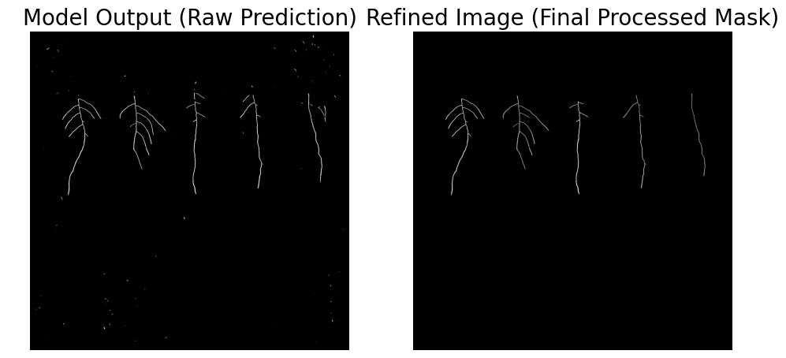

001 : Plant Phenotyping
Instance Segmentation for Accurate Plant Root Measurement at the Netherlands Plant Eco-Phenotyping Centre
Introduction
This project, developed for the Netherlands Plant Eco-phenotyping Centre (NPEC), aims to advance plant phenotyping through the integration of computer vision, machine learning, and robotics. The primary focus is automating the detection and measurement of plant root systems using advanced image processing techniques.
The project consists of two key components:
- Segmenting plant roots from images
- Automating plant inoculation with a liquid handling robot
By leveraging AI and robotics, the project streamlines phenotyping workflows and enhances experimental throughput for plant research.
Dataset and Preprocessing
The dataset consists of 118 grayscale images, each containing 5 plants, manually annotated using the Labkit software. Each image includes four masks, representing different plant organs: shoot, seed, root, and occluded root (roots covered by objects).
Preprocessing steps applied to each image:
- Detecting and cropping the Petri dish (region of interest)
- Adding padding to ensure divisibility by a specified patch size
- Splitting the cropped image into smaller patches (patchification)
The dataset was split into:
- 70 training images → 8,470 patches
- 18 validation images → 2,178 patches
- 40 test images
Model, Post-Processing, and Performance Overview
The model used is a Keras-based U-Net architecture, specifically the implementation by Sreenivas Bhattiprolu, for semantic segmentation. The model's inputs are the previously mentioned patches, and the outputs are binary masks for the plant roots. After obtaining the model output, several post-processing steps were applied to refine the segmentation results and remove noise. These steps included removing small objects and holes, filtering components based on different stats and applying proximity checks to ensure accurate root detection. Finally, the mask was filtered to retain only the 5 roots.
Skeletonization of root masks allowed the detection of key landmarks: root starting point, primary root tips and root junctions.

Robotics
The second part of the project involved creating a controller for the pipetting robot. I worked using a simulated robotic environment for the Opentrons OT-2 pipetting robot. The simulation was used to create two controllers for the robot. One PID Controller and one Reinforcement Learning Controller. Both had the task of moving the robot's pipette to a specified location (the root tips identified by the computer vision pipeline) and then lowering the pipette to inject the liquid solution. The PID controller provided proportional responses to visual errors, while the RL algorithm learned to adapt to changing visual input, optimizing the robot's precision.
Conclusion
This project successfully integrates computer vision and robotics to automate plant phenotyping. Deep learning-based root segmentation, morphometric analysis, and robotic control using PID and RL enable a high-precision, high-throughput system. The result is an efficient and scalable phenotyping solution for plant research at NPEC.